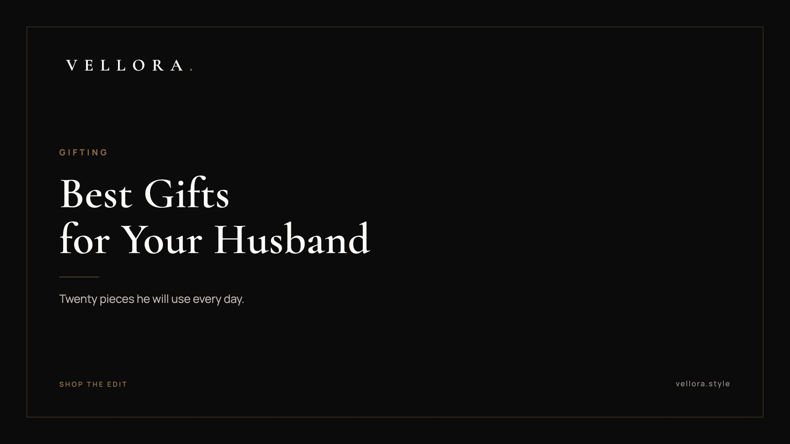

THE VELLORA EDIT
Best Gifts for Husband: 20 Premium Ideas He Will Use Every Day
By Vansh Shah, Founder

- Buy for daily use. The gifts men keep are the ones they wear or carry every day.
- A watch is the strongest single gift here, and the right type depends on how he lives.
- Clean leather sneakers and small leather goods make good second gifts or lighter occasions.
- A matched pair of watches works best when the two share a metal or a style, not an exact model.
- Dates to plan around: Karwa Chauth Thu 29 Oct, Dhanteras Fri 6 Nov, Diwali Sun 8 Nov.
The best gifts for husband are the things he will use every single day without thinking about them. A watch on his wrist. Sneakers by the door. A card holder in his pocket. Most men are hard to shop for because they buy what they need and stop there, so the best gifts for husband tend to be upgrades to things he already uses, chosen with more care than he would spend on himself.
We sorted the best gifts for husband on this list by occasion: Diwali, your anniversary and a 40th birthday. There are 20 ideas in total, each tied to a piece we carry at Vellora or a clear style to look for. Watches lead, because a good watch is the one accessory he will wear for decades. If you only have a minute, jump to the occasion in front of you. If you are planning ahead, the watch table further down will help you match the best gifts for husband to the kind of man he is.
Start with what he already wears
Three small checks will narrow things down fast.
- His wrist. Does he wear a watch now? On a bracelet or a strap? Steel or gold? Note the size if you can.
- His shoes. If he lives in sneakers on weekends, a better pair will get used. If he does not, skip them.
- His pockets. A bulky wallet is a sign he would welcome something slimmer.
Men rarely ask for gifts. They do notice when one fits their routine.
A few things we would skip:
- A watch chosen by name alone, without checking the size against his wrist.
- Statement sneakers for a man who only wears formal shoes.
- Anything that needs a lot of care he will not give it.
If you are giving on Karwa Chauth
Karwa Chauth falls on Thursday 29 October. Many wives observe the fast, and in many homes the gifts travel in both directions now. If you want to mark the evening for him, keep it small and personal: a card holder, a strap for his favorite watch, or a pair of sneakers for the weekend after. Save the larger piece for Dhanteras or your anniversary so the two gifts do not compete.
Diwali gift ideas for husband
Diwali falls on Sunday 8 November this year, with Dhanteras on Friday 6 November. Many families buy gold or metal on Dhanteras, which makes it a natural day for a watch. These diwali gift ideas for husband suit the festive week and everything after it.
1. A gold dress watch for Dhanteras
A dress watch is slim, simple and made to sit under a cuff. The 1908, reference 52508 is 39 mm in 18 ct yellow gold with a polished finish. It suits a kurta at puja and a suit at a wedding equally well.
2. A day-date watch in yellow gold
A day-date shows the day of the week as well as the date. The Day-Date 40, reference 228238 has a 40 mm Oyster case in yellow gold. It is a classic, confident choice for a man who likes his watch to be noticed, but only up close.

3. Clean leather sneakers for festive weekends
Diwali week brings card parties, family lunches and long evenings out. A clean low-top sneaker works with chinos and a linen shirt. The LV Trainer Sneaker in Marine is a good example of a sneaker that dresses up without effort.
4. A slim leather card holder
Look for full-grain leather, four to six card slots and a center pocket for folded notes. It replaces a thick wallet and fits a shirt pocket.
5. A brown leather belt
A plain brown belt with a simple buckle goes with almost everything in his wardrobe. Choose leather that matches the shoes he wears most.
6. A leather watch roll for travel
If Diwali means a trip home, a watch roll protects one to three watches in a bag. A soft lining and separate sleeves stop them knocking against each other.
7. A leather weekender
A medium weekender in a dark leather or canvas carries three days of clothes and goes in an overhead bin. Of the festive picks, it is the one he will use on every short trip that follows.
Best anniversary gift for husband
An anniversary gift is personal, and often private. The best anniversary gift for husband is usually something he will wear daily and connect with you every time he looks at it. That is why watches lead this section.
8. A GMT watch for the man who travels
A GMT watch has an extra hour hand that makes one full turn every 24 hours. Read against a 24-hour bezel, it shows a second time zone, which is useful for anyone who travels or works with people abroad. The GMT-Master II, reference 126710GRNR has a 40 mm Oyster case in Oystersteel, a sturdy everyday choice.

9. A matched pair of watches for both of you
More on this below. In short: two watches that share a metal or a mood, one on each wrist.
10. A new strap for the watch he already loves
If he has a favorite watch, a well-made leather strap changes its character. Check the lug width first, usually printed on the original strap or listed in the manual.
11. A watch winder
An automatic watch winds itself from the motion of the wrist. When it sits in a drawer, it stops. A winder keeps it running between wears, which is handy for a man with more than one automatic.
12. Blue leather sneakers
The LV Trainer Sneaker in Blue is a quieter take on a statement shoe. It is a good pick for a husband whose weekend wardrobe leans casual. Our sneaker edit has the full selection.
13. A card holder with your date inside
Take idea 4 and make it personal. Some leather goods can be embossed with initials or a date, so ask before you buy. A small detail on the inside reads more private than a monogram on the front.
His and her watch sets: matching for couples
A his and her watch set does not need to be two identical watches. In fact, matched pairs usually look better when they are related rather than the same. Here are the approaches that work.
- Same metal. Two yellow gold watches, or two steel ones, in sizes that suit each wrist.
- Same family. Two watches from one collection, in different sizes or dial colors.
- Same mood. Two sporty chronographs, or two slim dress watches, even if the models differ.
As an example from our edit, the 1908 and the Day-Date 40 are both yellow gold, one a slim dress watch and one a more substantial day-date. The two Seiko Prospex solar chronographs, the Speedtimer Go Large and the Circuit Race, make a sporty pair. Matching for couples is about the shared choice. The watches should still fit each person.
Watches as anniversary gifts
When people ask us about the best watches for anniversary gift ideas, we start with why a watch works at all. It marks time, and he wears it every day. Some couples engrave the date on the caseback. Others simply remember the year it arrived.
When choosing, think about his day. A dress watch suits an office and formal events. A GMT suits a frequent traveler. A solar chronograph suits a man who is outdoors or on the move. If you want a deeper read on what to look for, our page on the best luxury watches for men covers movements, sizes and fit.
| Watch type | What it does | Best for | Example we carry |
|---|---|---|---|
| Dress watch | Time only, slim case | Office, weddings, formal events | 1908, reference 52508 |
| Day-date | Shows day and date | A man who likes a classic gold watch | Day-Date 40, reference 228238 |
| GMT | Tracks a second time zone | Frequent travelers | GMT-Master II, reference 126710GRNR |
| Solar chronograph | Stopwatch function, charged by light | Active, sporty, outdoors | Seiko Prospex Speedtimer Go Large Solar |
If a watch is on your list, read across the row that sounds most like him and start there.
Best gifts for 40th birthday
Forty is a milestone, and many men mark it with a first serious watch or a better version of something they have used for years. These are our best gifts for 40th birthday picks for him.
14. A solar chronograph
The Seiko Prospex Speedtimer Go Large Solar is a solar chronograph. Light charges it, so it does not need routine battery swaps, and the stopwatch function suits a man who runs, drives or times things. As the name says, it wears large.
15. A racing-inspired solar chronograph
The Seiko Prospex Circuit Race Solar is another solar chronograph, with a motorsport theme. A good fit for a husband who follows racing.
16. A classic dress watch on a leather strap
If he has never owned a dress watch, forty is a fine time to start. Look for a case between 36 and 40 mm, a plain dial and a slim profile.
17. Minimal white leather sneakers
Plain white leather sneakers go with jeans, chinos and even a relaxed suit. Our page on luxury sneakers for men covers fit and leather care.
18. A leather document folio
A slim folio for papers, a tablet and a pen. It suits a man who meets clients or carries work home. Choose a dark color so it does not show wear, and check that it closes flat when full.
19. A leather passport holder
Small, useful and personal. It pairs well with a GMT watch for a husband who travels.
20. A watch box for the collection he is starting
A watch box with four to six slots keeps watches dust-free and easy to choose from each morning. It also hints that more watches may follow.
A quiet note before you choose
We keep our edit small and describe each piece plainly, using brand names only to say what the product is. The photographs show the actual pieces, close up. Our watch edit is the natural place to start. We, the Vellora team, hope this list makes the choice a little easier.